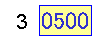
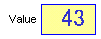
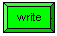
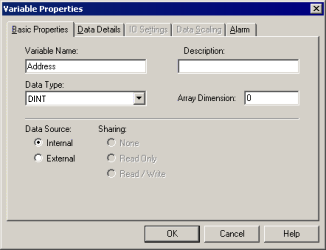
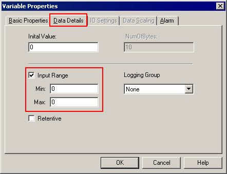
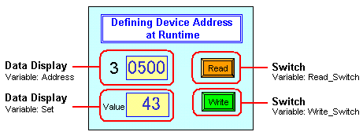
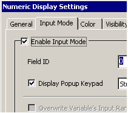
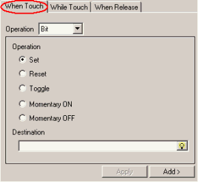

|
|
|
|
|
|
|
|
Before writing the scripts, set up the following variables, switches, and data displays.
|
Name |
Description |
|
D |
DINT array variable, with 15 elements. |
|
Address |
Internal DINT variable used to define the device address number. This variable will store values 500 to 514 only.  |
|
Set |
Internal DINT variable which stores the value that's written to the device address.  |
|
Read_Switch |
Internal BOOL variable used to trigger the operation that reads the value in the device address. |
|
Write_Switch |
Internal BOOL variable used to trigger the operation that writes a new value to the device address.  |
Create a new DINT variable and name it D. Set the Array Dimension to 15, and Data Source to External.
After you've created the variable array, you can quickly configure the device addresses for each array element. Right-click the variable array node and select Configure Device Address.
Click OK to create the Array.

For Address, which stores values 500 to 514 only, in the New Variable dialog box click the Data Details tab and select Input Range. Define the MinValue as 500, and the MaxValue as 514.


By defining the Input Range, you limit the values you can input from the keypad. However, other methods of changing the variable value (such as scripts, switches, and writes from the equipment) are not blocked.
Create two internal BOOL variables, named Read_Switch and Write_Switch.
After defining your variables, you can set up data displays and switches associated with these variables, to be read or written (by the switches) and displayed (by the data displays) at runtime.

Data Display
Set up data display parts with the defined variable.
To enable keypad inputs, click the Input Mode tab, select Enable Input Mode. The Display Popup Keypad check box is automatically selected. This enables the popup keypad. To disable the popup keypad, clear the Display Popup Keypad check box.

For information on how to set up Data Display parts, see Chapter 11, Displaying and Inputting Data.
Instead of a Data Display part, you can use Value animation for displaying and inputting data.
Switches
Set up switches with the defined variable.
Set up the bit set operation in the When Touch tab.

For information on how to work with switches, see Section 9.2, Creating Switches.
Instead of a Switch part, you can use Touch animation for setting and resetting BOOL variables.